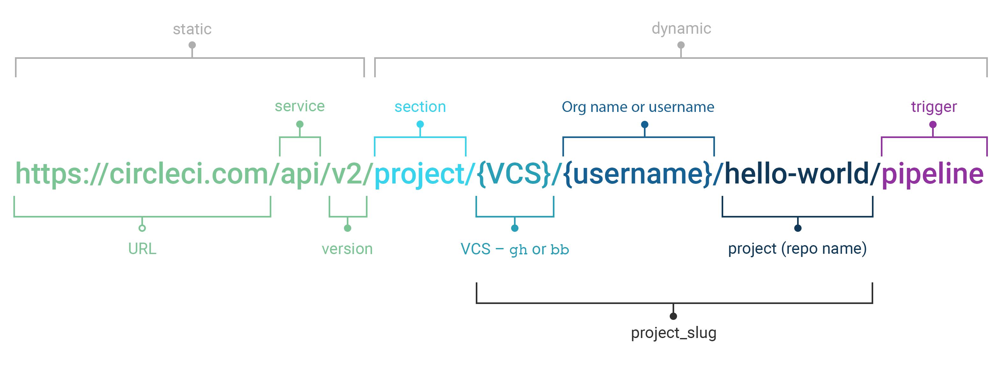
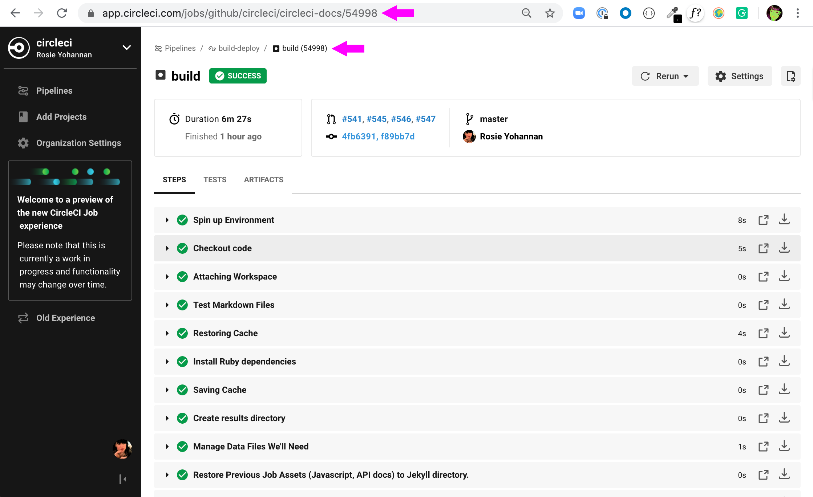

CircleCI API Developer's Guide
This API Developer’s Guide was written to assist developers in quickly and easily making API calls to CircleCI services to return detailed information about users, pipelines, projects and workflows.
- API Overview
API Overview
The CircleCI platform provides an API that enables users to interact with the CircleCI platform (e.g. triggering pipelines, updating settings etc, in addition to retrieving detailed information about users, jobs, workflows and pipelines.
API Categories
The current categories of API v2 endpoints are:
- Authentication
- Pipeline
- Workflows
- User (Preview)
- Project (Preview)
- Job (Preview)
Note: Portions of the CircleCI API v2 remain under “Preview”. Preview endpoints are not yet fully supported or considered generally available. Breaking changes to API v2 Preview endpoints are planned in advance and are announced in the API v2 breaking changes log.
Authentication and Authorization
The CircleCI API utilizes token-based authentication to manage access to the API server and validate that a user has permission to make API requests. Before you can make an API request, you must first add an API token and then verify that you are authenticated by the API server to make requests. The process to add an API token and have the API server authenticate you is described in the sections below.
Note You may use the API token as the username for HTTP Basic Authentication, by passing the -u flag to the curl command.
Add an API Token
To add an API token, perform the steps listed below.
- Add an API token from the Personal API Tokens page.
-
To test your token call the API using the command below. You will need to set your API token as an environment variable before making a cURL call.
export CIRCLE_TOKEN={your_api_token} curl https://circleci.com/api/v2/me --header "Circle-Token: $CIRCLE_TOKEN" -
You should see a JSON response similar to the example shown below.
{ "id": "string", "login": "string", "name": "string" }
Note: All API calls are made in the same way, by making standard HTTP calls, using JSON, a content-type, and your API token. Please note that the JSON examples shown in this document are not comprehensive and may contain additional JSON response fields not shown in the example, based on user input and fields.
Getting Started with the API
The CircleCI API shares similarities with previous API versions in that it identifies your projects using repository name. For instance, if you want to pull information from CircleCI about the GitHub repository https://github.com/CircleCI-Public/circleci-cli you can refer to that in the CircleCI API as gh/CircleCI-Public/circleci-cli, which is a “triplet” of the project type (VCS provider), the name of your “organization” (or your username), and the name of the repository.
For the project type you can use github or bitbucket as well as the shorter forms gh or bb. The organization is your username or organization name in your version control system.
With this API, CircleCI is introducing a string representation of the triplet called the project_slug, which takes the following form:
{project_type}/{org_name}/{repo_name}
The project_slug is included in the payload when pulling information about a project as well as when looking up a pipeline or workflow by ID. The project_slug can then be used to get information about the project. It is possible in the future the shape of a project_slug may change, but in all cases it would be usable as a human-readable identifier for a given project.

HTTP Status Codes and Response Handling
When you make an API request to the server, an HTTP status code is returned along with the JSON body response. The CircleCI API v2 adheres to standard HTTP response codes, which include the following status code definitions:
- 200 - Success
- 400 - Client error
- 500 - Server error
200 Status Codes
If you receive a 200 HTTP status code, your API request is successful and the requested resource will be returned. The following 200 HTTP status codes could potentially be returned with your request:
- 200 - OK
- 201 - Created
- 202 - Accepted
400 Status Codes
If you receive a 400 HTTP status code, there is a problem with the request and the server is unable to successfully process the request. The following status codes may be returned with your request:
- 401 - Unauthorized
- 403 - Forbidden
- 404 - Not Found
- 429 - Too Many Requests (see rate limits).
500 Status Code
If you receive a 500 HTTP status code, there is a problem with the server and the request cannot be processed. If you encounter a 500 response, the error will be logged and CircleCI will work to resolve the error. The following 500 HTTP status codes could potentially be returned with your request:
- 500 - Internal Server Error
Rate Limits
The CircleCI API is protected by a number of rate limiting measures to ensure the stability of the system. We reserve the right to throttle the requests made by an individual user, or the requests made to individual resources in order to ensure a fair level of service to all of our users.
As the author of an API integration with CircleCI, your integration should expect to be throttled, and should be able to gracefully handle failure. There are different protections and limits in place for different parts of the API. In particular, we protect our API against sudden large bursts of traffic, and we protect against sustained high volumes of requests, for example, frequent polling.
For HTTP APIs, when a request is throttled, you will receive HTTP status code 429. If your integration requires that a throttled request is completed, then you should retry these requests after a delay, using an exponential backoff. In most cases, the HTTP 429 response code will be accompanied by the Retry-After HTTP header. When this header is present, your integration should wait for the period of time specified by the header value before retrying a request.
REST API Tutorial
For more detailed information about HTTP status codes, refer to the rest api tutorial.
Example End-to-End API Request
The following section details the steps you would need, from start to finish, to make an API call. This section includes creating a “demo repository” called “hello-world”, however, you can use a pre-existing repository to follow along if you choose.
NOTE: Many of the API calls make use of the {project-slug} triplet, described above.
Prerequisites
- A GitHub or BitBucket account with a repository to setup with CircleCI.
- Completion of the CircleCI onboarding.
Steps
-
On your VCS provider, create a repository. The repo for this example will be called
hello-world. -
Next, follow the onboarding for a new project on CircleCI. You can access onboarding by visiting the application and clicking on “Add Projects” in the sidebar or by going to the link: https://onboarding.circleci.com/project-dashboard/{VCS}/{org_name} where
VCSis eithergithub(orgh) orbitbucket(orbb) andorg_nameis your organization or personal VCS username. Find your project in the onboarding list and click Setup Project. After completing an onboarding, you should have a validconfig.ymlfile in a.circlecifolder at the root of your repository. In this example, theconfig.ymlcontains the following:# Use the latest 2.1 version of CircleCI pipeline process engine. See: https://circleci.com/docs/2.0/configuration-reference version: 2.1 # Use a package of configuration called an orb. orbs: # Declare a dependency on the welcome-orb welcome: circleci/welcome-orb@0.4.1 # Orchestrate or schedule a set of jobs workflows: # Name the workflow "welcome" welcome: # Run the welcome/run job in its own container jobs: - welcome/run -
Add an API token from the Personal API Tokens page. Be sure to write down and store your API token in a secure place once you generate it.
-
It’s time to test out your API token using
curlto make sure everything works. The following code snippets demonstrate querying all pipelines on a project. Please note that in the example below, the values within curly braces ({}) need to be replaced with values specific to your username/orgname.# First: set your CircleCI token as an environment variable export CIRCLECI_TOKEN={your_api_token} curl --header "Circle-Token: $CIRCLECI_TOKEN" \ --header 'Accept: application/json' \ --header 'Content-Type: application/json' \ https://circleci.com/api/v2/project/{project-slug}/pipelineYou will likely receive a long string of unformatted JSON. After formatting, it should look like so:
{ "next_page_token": null, "items": [ { "id": "03fcbba0-d847-4c8b-a553-6fdd7854b893", "errors": [], "project_slug": "gh/{YOUR_USER_NAME}/hello-world", "updated_at": "2020-01-10T19:45:58.517Z", "number": 1, "state": "created", "created_at": "2020-01-10T19:45:58.517Z", "trigger": { "received_at": "2020-01-10T19:45:58.489Z", "type": "api", "actor": { "login": "teesloane", "avatar_url": "https://avatars0.githubusercontent.com/u/12987958?v=4" } }, "vcs": { "origin_repository_url": "https://github.com/{YOUR_USER_NAME}/hello-world", "target_repository_url": "https://github.com/{YOUR_USER_NAME}/hello-world", "revision": "ca67134f650e362133e51a9ffdb8e5ddc7fa53a5", "provider_name": "GitHub", "branch": "master" } } ] }That’s great! Hopefully everything is working for you up to this point. Let’s move on to performing something that might be a bit more useful.
-
One of the benefits of the CircleCI API v2 is the ability to remotely trigger pipelines with parameters. The following code snippet simply triggers a pipeline via
curlwithout any body parameters:curl -X POST https://circleci.com/api/v2/project/{project-slug}/pipeline \ --header 'Content-Type: application/json' \ --header 'Accept: application/json' \ --header "Circle-Token: $CIRCLECI_TOKEN" \ # Which returns: { "number": 2, "state": "pending", "id": "e411ea74-c64a-4d60-9292-115e782802ed", "created_at": "2020-01-15T15:32:36.605Z" }While this alone can be useful, we want to be able to customize parameters of the pipeline when we send this POST request. By including a body parameter in the
curlrequest (via the-dflag), we can customize specific attributes of the pipeline when it runs: pipeline parameters, the branch, or the git tag. Below, we are telling the pipelines to trigger for “my-branch”curl -X POST https://circleci.com/api/v2/project/{project-slug}/pipeline \ --header 'Content-Type: application/json' \ --header 'Accept: application/json' \ --header "Circle-Token: $CIRCLE_TOKEN" \ -d '{ "branch": "bar" }' -
Let’s move on to a more complex example: triggering a pipeline and passing a parameter that can be dynamically substituted into your configuration. In this example, we will pass a docker image tag to our docker-executor key. First, we will need to modify the
.circleci/config.ymlto be a little more complex than the standard “Hello World” sample provided by the onboarding.version: 2.1 jobs: build: docker: - image: "circleci/node:<< pipeline.parameters.image-tag >>" environment: IMAGETAG: "<< pipeline.parameters.image-tag >>" steps: - run: echo "Image tag used was ${IMAGETAG}" parameters: image-tag: default: latest type: stringYou will need to declare the parameters you expect to receive from the API. In this case, under the
parameterskey, we definte an “image-tag” to be expected in the JSON payload of a POST request to the Trigger New Pipeline endpoint. -
Now we can run a
curlrequest that passes variables in a POST request, similar to the following:curl -u ${CIRCLECI_TOKEN}: -X POST --header "Content-Type: application/json" -d '{ "parameters": { "image-tag": "4.8.2" } }' https://circleci.com/api/v2/project/{project-slug}/pipeline
This concludes the end-to-end example of using the V2 API. For more detailed information about other endpoints you may wish to call, please refer to the CircleCI API v2 Documentation for an overview of all endpoints currently available.
Additional API Use Cases
Now that you have a general understanding of how the CircleCI API v2 service works through an end-to-end API example request and walkthrough, let’s look at a few common tasks and operations you may perform on a regular basis when using the API. Whether you wish to return information about a job or project, or retrieve more detailed information about a project by reviewing its artifacts, the examples shown below should assist you in gaining a better understanding of how to make some API requests to the server so you can perform a deep dive into the specifics of your work.
Prerequisites
Before trying any of the API calls in this section, make sure you have met the following prerequisites:
- You have set up a GitHub or BitBucket account with a repository to use with CircleCI.
- You have completed CircleCI onboarding and you have a project setup.
- You have a personal API token and have been authenticated to make calls to the server.
This section provides detailed information on how you can perform the following tasks and operations:
Get Project Details
You may often find that it would be helpful to retrieve information about a specific project, including the name of the organization the project belongs to, the version control system (vcs) that hosts the project, and other details. The CircleCI API enables you to return this and other information by making a single GET request to the project/{project-slug} endpoint by passing the project-slug parameter.
You may notice a new concept called a project-slug when making this API call. A project-slug is a “triplet” that takes the following form:
{project_type}/{org_name}/{repo_name}
The project_slug is included in the payload when you pull information about a project, which enables you to retrieve detailed information about a specific project.
Note If you would like more detailed information about a project, or simply need a refresher on the specifics of a project, please refer to the CircleCI Projects page.
Steps
Of the several project-related API endpoints available with CircleCI API v2, making a GET request to the /project/{project-slug} endpoint enables you to return detailed information about a specific project by passing the project_slug parameter with your request.
Note: whenever you see curly brackets {}, this represents a variable that you must manually enter in the request.
To return project details, perform the following steps:
-
For this GET API call, under the
parameterskey, define theproject_slug(/ / ) parameter you want returned in the JSON payload in your `curl` request as follows: curl -X GET https://circleci.com/api/v2/project/{project_slug} \ --header 'Content-Type: application/json' \ --header 'Accept: application/json' \ --header "Circle-Token: $CIRCLE_TOKEN" \ -
After passing the
project-slugparameter and making the API request, you will receive unformatted JSON text similar to the example shown below.{ "slug": "gh/CircleCI-Public/api-preview-docs", "name": "api-preview-docs", "organization_name": "CircleCI-Public", "vcs_info": { "vcs_url": "https://github.com/CircleCI-Public/api-preview-docs", "provider": "Bitbucket", "default_branch": "master" } }
Notice in the example above that you will receive very specific information about your project, including the name of the project, the name of the organization that the project belongs to, and information about the VCS that hosts the project. For a more detailed breakdown of each value returned in this request, please refer to the Get Project Details section of the CircleCI API v2 Reference Guide.
Get Job Details
Much like the Get Project Details API request described in the previous example, the Get Job Details API request enables you to return specific job information from the CircleCI API by making a single API request. Retrieving job information can be very useful when you want information about how your job performed, what resources were used (e.g. pipeline, executor type, etc.), and the time it took for the job to finish.
Please remember, jobs are collections of steps. Each job must declare an executor that is either docker, machine, windows or macos. machine includes a default image if not specified, for docker you must specify an image to use for the primary container, for macos you must specify an Xcode version, and for windows you must use the Windows orb.
Steps
Of the several Jobs-related API endpoints available with CircleCI API v2, there is a specific endpoint you may wish to call to receive detailed information about your job. This API call to the GET /project/{project_slug}/job/{job-number}endpoint enables you to return detailed information about a specific job by passing the project-slug and job-number parameters with your request.
Note In this example, please note that whenever you see curly brackets {}, this represents a variable that you must manually enter in the request.
To return job details, perform the following steps:
-
For this GET API call, under the
parameterskey, define theproject_slugandjob_numberparameters you want returned in the JSON payload in yourcurlrequest as follows:curl -X GET https://circleci.com/api/v2/project/{project_slug}/job/{job_number} \ --header 'Content-Type: application/json' \ --header 'Accept: application/json' \ --header "Circle-Token: $CIRCLE_TOKEN" \ -
After passing the parameters and making the API request, you will receive unformatted JSON text similar to the example shown below.
{ "web_url": "string", "project": { "slug": "gh/CircleCI-Public/api-preview-docs", "name": "api-preview-docs", "external_url": "https://github.com/CircleCI-Public/api-preview-docs" }, "parallel_runs": [{ "index": 0, "status": "string" }], "started_at": "2020-01-24T11:33:40Z", "latest_workflow": { "id": "string", "name": "build-and-test" }, "name": "string", "executor": { "type": "string", "resource_class": "string" }, "parallelism": 0, "status": null, "number": 0, "pipeline": { "id": "string" }, "duration": 0, "created_at": "2020-01-13T18:51:40Z", "messages": [{ "type": "string", "message": "string", "reason": "string" }], "contexts": [{ "name": "string" }], "organization": { "name": "string" }, "queued_at": "2020-01-13T18:51:40Z", "stopped_at": "2020-01-13T18:51:40Z" }
Notice in the example above that you will receive very specific information about your job, including specific project and workflow details for the job, the date and time the job started and then finished, and job-specific information such as the executor type used, current status of the job, and the duration of the job.
For a more detailed breakdown of each value returned in this request, please refer to the Get Job Details section of the CircleCI API v2 Reference Guide.
Download Artifacts
The following section details the steps you need to follow to download artifacts that are generated when a job is run, first, returning a list of artifacts for a job, and then downloading the full set of artifacts. If you are looking for instructions for downloading the latest artifacts for a pipeline, without needing to specify a job number, see our API v1.1 guide – keep checking back here as this functionality will be added to API v2 in the future.
Steps
-
First, we will ensure your API token is set as an environment variable. You maybe have already done this during authentication, but if not, run the following command in your terminal, substituting your personal API token:
export CIRCLECI_TOKEN={your_api_token} -
Next, retrieve the job number for the job you want to get artifacts for. You can find job numbers in the UI - either in the breadcrumbs on the Job Details page, or in the URL.

-
Next, use the
curlcommand to return a list of artifacts for a specific job.curl -X GET https://circleci.com/api/v2/project/{project-slug}/{job_number}/artifacts \ --header 'Content-Type: application/json' \ --header 'Accept: application/json' \ --header "Circle-Token: $CIRCLECI_TOKEN"You should get a list of artifacts back - if the job you selected has artifacts associated with it. Here’s an extract from the output when requesting artifacts for a job that builds these docs:
{ "path": "circleci-docs/assets/img/docs/walkthrough6.png", "node_index": 0, "url": "https://53936-48750547-gh.circle-artifacts.com/0/circleci-docs/assets/img/docs/walkthrough6.png" }, { "path": "circleci-docs/assets/img/docs/walkthrough7.png", "node_index": 0, "url": "https://53936-48750547-gh.circle-artifacts.com/0/circleci-docs/assets/img/docs/walkthrough7.png" }, { "path": "circleci-docs/assets/img/docs/walkthrough8.png", "node_index": 0, "url": "https://53936-48750547-gh.circle-artifacts.com/0/circleci-docs/assets/img/docs/walkthrough8.png" }, -
Next, you may extend this API call to download the artifacts. Navigate to the location you would like to download the artifacts to, and run the following command, remembering to substitute your own values in the request:
curl -X GET https://circleci.com/api/v2/project/{project-slug}/{job_number}/artifacts \ --header 'Content-Type: application/json' \ --header 'Accept: application/json' \ --header "Circle-Token: $CIRCLECI_TOKEN" \ | grep -o 'https://[^"]*' \ | wget -v -i -Note:
grepis used to locate all the URLs for downloading the job artifacts, whilewgetis used to perform the download.
Gather Insights
The CircleCI API v2 also includes several endpoints that enable you to retrieve detailed insights into your workflows and individual jobs. By making API calls to these endpoints, you can better understand how to optimize your workflows and jobs so you can increase workflow performance while minimizing credit usage and consumption. The example below describes how you can return information about a single workflow containg information about metrics and credit usage.
Returning Workflow Metrics
To return aggregated data for an individual workflow, perform the steps listed below.
Note: whenever you see curly brackets {}, this represents a variable that you must manually enter in the request.
-
For this GET API call, under the
parameterskey, define theproject_slugin yourcurlrequest as follows:curl -X GET https://circleci.com/api/v2/insights/{project-slug}/workflows --header 'Content-Type: application/json' --header 'Accept: application/json' --header "Circle-Token: $CIRCLECI_TOKEN" -
After you have defined the
project-slugand made the API request, you will receive unformatted JSON text similar to the example shown below.
{
"next_page_token": null,
"items": [{
"name": "build",
"metrics": {
"success_rate": 0.5975609756097561,
"total_runs": 82,
"failed_runs": 33,
"successful_runs": 49,
"throughput": 11.714285714285714,
"mttr": 46466,
"duration_metrics": {
"min": 8796,
"max": 20707,
"median": 11656,
"mean": 12847,
"p95": 18856,
"standard_deviation": 3489.0
},
"total_credits_used": 16216608
},
"window_start": "2020-01-15T03:20:24.927Z",
"window_end": "2020-01-21T23:23:04.390Z"
}, {
"name": "docker_build",
"metrics": {
"success_rate": 1.0,
"total_runs": 1,
"failed_runs": 0,
"successful_runs": 1,
"throughput": 1.0,
"mttr": 0,
"duration_metrics": {
"min": 1570,
"max": 1570,
"median": 1570,
"mean": 1570,
"p95": 1570,
"standard_deviation": 0.0
},
"total_credits_used": 5154
},
"window_start": "2020-01-19T15:00:16.032Z",
"window_end": "2020-01-19T15:26:26.648Z"
}, {
"name": "ecr_gc",
"metrics": {
"success_rate": 1.0,
"total_runs": 167,
"failed_runs": 0,
"successful_runs": 167,
"throughput": 23.857142857142858,
"mttr": 0,
"duration_metrics": {
"min": 31,
"max": 96,
"median": 46,
"mean": 49,
"p95": 72,
"standard_deviation": 11.0
},
"total_credits_used": 3482
},
"window_start": "2020-01-15T01:45:03.613Z",
"window_end": "2020-01-21T23:46:25.970Z"
}]
}
Notice that in this JSON response, you will receive detailed metrics for the set of workflows that were run, including:
-
success_rate- The ratio of successful runs (only those with a “success” status) over the total number of runs (any status) in the aggregation window. -
total_runs- The total number of runs that were performed. -
failed_runs- The number of runs that failed. -
successful_runs- The number of runs that were successful. -
throughput- The average number of builds per day. -
mttr- The Mean Time to Recovery (MTTR). This is the average time it takes, when a CI build fails, to get it back to a “success” status. -
duration_metrics- A collection of specific metrics and measurements that provide the duration of the workflow, which includesmin,max,median,mean,p95, andstandard_deviation. -
total credits used- The total number of credits that were used during the build. -
windows_start & windows_end- The time the build was initiated, and then completed.
Note The above example only shows just a few builds. When you run this command, you may receive up to 250 individual builds that you can review in much more detail.
Reviewing Individual Job Metrics
Now that you have retrieved aggregated data for up to 250 different jobs, you will most likely want to review specific information about a single job, or smaller number of jobs, to ensure that your jobs are running efficiently. To review an individual job, follow the steps below.
-
Using your
project-slugfrom the previous API call you made to return workflow data, make a GET API call to the following insights endpoint:curl -X GET https://circleci.com/api/v2/insights/{project-slug}/workflows/builds --header 'Content-Type: application/json' --header 'Accept: application/json' --header "Circle-Token: $CIRCLECI_TOKEN" -
Once you call this insights endpoint, you will receive a JSON output similar to the example shown below.
{
"items" : [ {
"id" : "08863cb6-3185-4c2f-a44e-b517b7f695a6",
"status" : "failed",
"duration" : 9263,
"created_at" : "2020-01-21T20:34:50.223Z",
"stopped_at" : "2020-01-21T23:09:13.953Z",
"credits_used" : 198981
}, {
"id" : "2705482b-40ae-47fd-9032-4113e976510f",
"status" : "failed",
"duration" : 9075,
"created_at" : "2020-01-21T20:14:00.247Z",
"stopped_at" : "2020-01-21T22:45:15.614Z",
"credits_used" : 148394
}, {
"id" : "65e049ee-5949-4c30-a5c6-9433ed83f96f",
"status" : "failed",
"duration" : 11697,
"created_at" : "2020-01-21T20:08:06.950Z",
"stopped_at" : "2020-01-21T23:23:04.390Z",
"credits_used" : 122255
}, {
"id" : "b7354945-32ee-4cb5-b8bf-a2f8c115b955",
"status" : "success",
"duration" : 9230,
"created_at" : "2020-01-21T19:31:11.081Z",
"stopped_at" : "2020-01-21T22:05:02.072Z",
"credits_used" : 195050
}, {
"id" : "7e843b39-d979-4152-9868-ba5dacebafc9",
"status" : "failed",
"duration" : 9441,
"created_at" : "2020-01-21T18:39:42.662Z",
"stopped_at" : "2020-01-21T21:17:04.417Z",
"credits_used" : 192854
}, {
"id" : "8d3ce265-e91e-48d5-bb3d-681cb0e748d7",
"status" : "failed",
"duration" : 9362,
"created_at" : "2020-01-21T18:38:28.225Z",
"stopped_at" : "2020-01-21T21:14:30.330Z",
"credits_used" : 194079
}, {
"id" : "188fcf84-4879-4dd3-8bf2-4f6ea724c692",
"status" : "failed",
"duration" : 8910,
"created_at" : "2020-01-20T03:09:50.448Z",
"stopped_at" : "2020-01-20T05:38:21.392Z",
"credits_used" : 193056
},
When reviewing each individual review job, please note that the following information returned for each job:
-
id- The ID associated with the individual job. -
status- The status of the job. -
duration- The total time of the job, in seconds. -
created_at- The time the job started. -
stopped_at- The time the job ended. -
credits_used- The number of credits used during the job.
Reference
API Endpoints
The CircleCI v2 API, and its associated endpoints allow you to make HTTP calls to designated endpoints developed in the underlying CircleCI API architecture. These endpoints provide programmatic access to CircleCI services, including pipelines, workflows, and jobs.
Before working with the API and making calls, you should first have an understanding of the various API requests you can make to API v2 endpoints. The sections below describe these API requests.
User Endpoints
| Endpoint | Description |
|---|---|
| GET /user/{id} | This endpoint enables you to return information about a specific user by making a GET request and passing the id parameter in the request |
| GET /me/collaborations | This endoint enables you to return a list of organizations that the user is a member of, or is a collaborator by making a GET request and passing the collaborations parameter in the request. |
Pipeline API Requests
| Endpoint | Description |
|---|---|
| GET /project/{project-slug}/pipeline/{pipeline-number} | Returns an individual pipeline. |
| GET /pipeline/{pipeline-id}/config | Returns the configuration of a specific pipeline. |
| GET /pipeline/{pipeline-id}/workflow | Returns a list of workflows for a specific pipeline. |
| POST /project/{project-slug}/pipeline | Triggers a pipeline. |
| GET /project/{project-slug}/pipeline | Returns a list of all pipelines associated with a specific project. |
| GET /project/{project-slug}/pipeline/mine | Returns all pipelines for the project that you have triggered. |
Project API Requests
| Endpoint | Description |
|---|---|
| GET /project/{project-slug} | Returns an individual project. |
| GET /project/{project-slug}/checkout-key | Returns all checkout keys for a specific project. |
| POST /project/{project-slug}/checkout-key | Creates a new checkout key for a project. |
| DELETE /project/{project-slug}/checkout-key/{fingerprint} | Deletes a checkout key for a specific project. |
| GET /project/{project-slug}/checkout-key/{fingerprint} | Returns an individual checkout key for a specific project. |
| GET /project/{project-slug}/pipeline/mine | Returns all pipelines for the project that you have triggered. |
| GET /project/{project-slug}/envvar | Lists all current environment variables for a specific project. |
| POST /project/{project-slug}/envvar | Creates an environment variable for a project. |
| DELETE /project/{project-slug}/envvar/{name} | Deletes an existing environment variable from a project. |
| GET /project/{project-slug}/envvar/{name} | Returns a masked value for an environment variable for a project. |
Job API Requests
| Endpoint | Description |
|---|---|
| GET /project/{project-slug}/job/{job-number} | Returns details of a job. |
| POST /project/{project-slug}/job/{job-number}/cancel | Cancels a job. |
| GET /project/{project-slug}/{job-number}/artifacts | Returns artifacts for a job. |
| GET /project/{project-slug}/{job-number}/tests | Returns test metadata for a job. |
Workflow API Requests
| Endpoint | Description |
|---|---|
| GET /workflow/{id} | Returns a workflow. |
| POST /workflow/{id}/cancel | Cancels a workflow. |
| GET workflow/{id}/job | Returns all jobs associated with a workflow. |
| POST /workflow/{id}/rerun | Reruns a workflow. |
Insights Requests
| Endpoint | Description |
|---|---|
| GET /insights/{project-slug}/workflows | Get summary metrics for a project’s workflows. |
| GET /insights/{project-slug}/workflows/{workflow-name} | Get recent runs of a workflow |
| GET /insights/{project-slug}/workflows/{workflow-name}/jobs | Get summary metrics for a project workflow’s jobs. |
| GET /insights/{project-slug}/workflows/{workflow-name}/jobs/{job-name} | Get recent runs of a job within a workflow. |
See Also
- Refer to API V2 Introduction for high-level information about the CircleCI V2 API.
- Refer to API V2 Reference Guide for a detailed list of all endpoints that make up the CircleCI V2 API.